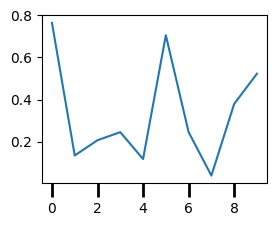

从零开始学Matplotlib绘图
Matplotlib是绘制图片的利器,支持多种类型的绘制样式,甚至还可以绘制动画,快和我一起来学习吧,本文参考
你好世界
下面是第一个实例
import numpy as np
import matplotlib.pyplot as plt
x = np.random.random(10)
fig = plt.figure()
ax = fig.add_axes(rect = [0,0,1,1])
ax.plot(x)
ax.set_title("Hello world!")
plt.show()
这段实例的主要任务如下
- 创建一个画布Figure:plt.figure
- 添加一个画区Axes:fig.add_axes,[左,下,宽,高]=[0,0,1,1]
- 添加一个画件Artist-Line2D:ax.plot
- 添加一个画件Artist-Text:ax.set_title
- 展示绘制图形:plt.show
无限可分
使用figure画图的最重要的功能之一是绘制多个图形在一个画布上,你可以通过下面的函数绘制
fig.subfigures()
fig.subfigures的参数如下
nrows, ncols:int,指定划分子图的网格行列数wspace, hspace:float, 指定子图的水平间距和垂直间距width_ratios:array-like of length *ncols,指定子图的宽度比,数组长度等同与列数height_ratios:array-like of length *nrows,指定子图的高度比,数组长度等同与行数
实例如下,你可以看到的确划分成功了,但是不同画区的显示好像重叠了诶？
import numpy as np
import matplotlib.pyplot as plt
fig = plt.figure()
sub_figs = fig.subfigures(2,3,wspace=0.1,hspace=0.2,width_ratios=[0.1,0.6,0.1],height_ratios=[0.5,0.5])
for i in sub_figs:
for j in i:
j.add_axes([0,0,0.8,0.8,])
plt.show()

我们在划分子区的时候的确将不同子区对应到了不重叠的子画布上,但是子区默认的[左,下,宽,高]=[0,0,0.8,0.8],左和底的开始位置恰好位于边界,自动在当前添加的刻度会超出边界被下一个子图覆盖,修改为这样就好了
j.add_axes([0.2,0.2,0.8,0.8,])
另一个方法是使用自动布局,layout支持constrained、compressed、tight三种布局,它会帮我们自动的调整被覆盖的位置
fig = plt.figure(layout = "constrained")
fig.add_axes()
fig.add_axes的参数如下,较为简单不做演示
rect:(left,bottom,width,height),表示新 Axes 的尺寸。所有值都是相对于图形宽度和高度的分数。projection:str,投影类型的名称,用于指定 Axes 的投影方式。可以是预定义的投影类型,如 'aitoff'、'hammer'、'lambert'、'mollweide'、'polar'、'rectilinear',也可以是自定义投影的名称。默认值为 None,表示使用默认的 'rectilinear' 投影。polar:bool,表示是否使用极坐标投影。如果设置为True,则等效于 projection='polar'。axes_class:matplotlib.axes.Axes的子类类型,用于实例化新的Axes对象。该参数与 projection 和 polar 不兼容。可以使用此参数创建自定义的 Axes 子类对象。有关示例,请参阅 :ref:axisartist_users-guide-index。sharex、sharey:matplotlib.axes.Axes对象,用于共享x轴或y轴。共享轴将具有与共享轴的原始轴相同的限制、刻度和刻度尺度。fig.add_subplot()
fig.subplot具有的参数如下nrows,ncols,projection,polar,sharex,sharey,label:见上*args:(row, col, *index*)或者.SubplotSpec, 默认为(1, 1, 1),按照指定的行列划分在指定序号的位置创建Axes，.SubplotSpec见下fig.add_gridspec()fig.subplots()
fig.subplots具有的参数如下,实际上该函数就是调用的fig.add_subplotnrows,ncols,sharex,shareywidth_ratios,height_ratios:list of array,长度和行列对齐,指定宽度和长度比squeeze:bool控制返回的Axes对象的维度,指定后返回一个压缩一维数组(2,3)->(6)subplot_kw:dict,传递给Figure.add_subplot方法的关键字参数字典。gridspec_kw:dict,传递给gridspec.GridSpec构造函数的关键字参数字典。
fig.subplot_mosaic()
fig.subplot_mosaic的参数如下
sharex,sharey,width_ratios,height_ratios,subplot_kw,,gridspec_kwmosaic:str或者list,指定划分分区的方式,比较灵活,见下面的示例per_subplot_kw:dict,传递给每个子区的参数empty_sentinel:str,指定无效占位符,默认为.
当mosaic为str时,.表示无效占位符,两个AA表示名称为A的Axes占用两个位置,
import numpy as np
import matplotlib.pyplot as plt
fig = plt.figure()
sub_figs = fig.subplot_mosaic("AAC;.BC")
sub_figs['A'].plot(x)
当mosaic为list时
import numpy as np
import matplotlib.pyplot as plt
inner = [
["inner A"],
["inner B"],
]
outer_nested_mosaic = [
["main", inner],
["bottom", "bottom"],
]
axd = plt.figure(layout="constrained").subplot_mosaic(
outer_nested_mosaic
)
plt.show()
fig.add_gridspec()
实际上该函数是调用了GridSpec，GridSpec的参数如下
nrows,ncols,wspace，hspace，width_ratios，height_ratiosleft,bottomright,top:float,指定位置信息，默认为(0.125，0.1，0.9，0.9)该函数生成的参数可以直接给fig.add_subplot使用
import numpy as np
import matplotlib.pyplot as plt
fig = plt.figure(layout, facecolor='lightblue')
gs = fig.add_gridspec(nrows=3, ncols=3, left=0.05, right=1,
hspace=0.5, wspace=0.5)
ax0 = fig.add_subplot(gs[:-1, :])
ax1 = fig.add_subplot(gs[-1, :-1])
ax2 = fig.add_subplot(gs[-1, -1])
fig.suptitle('Manual gridspec with right=0.75')
也可以直接在该返回值上绘制subgridspec，然后使用subplots
def squiggle_xy(a, b, c, d, i=np.arange(0.0, 2*np.pi, 0.05)):
return np.sin(i*a)*np.cos(i*b), np.sin(i*c)*np.cos(i*d)
fig = plt.figure(figsize=(8, 8), layout='constrained')
outer_grid = fig.add_gridspec(4, 4, wspace=0, hspace=0)
for a in range(4):
for b in range(4):
# gridspec inside gridspec
inner_grid = outer_grid[a, b].subgridspec(3, 3, wspace=0, hspace=0)
axs = inner_grid.subplots() # Create all subplots for the inner grid.
for (c, d), ax in np.ndenumerate(axs):
ax.plot(*squiggle_xy(a + 1, b + 1, c + 1, d + 1))
ax.set(xticks=[], yticks=[])
# show only the outside spines
for ax in fig.get_axes():
ss = ax.get_subplotspec()
ax.spines.top.set_visible(ss.is_first_row())
ax.spines.bottom.set_visible(ss.is_last_row())
ax.spines.left.set_visible(ss.is_first_col())
ax.spines.right.set_visible(ss.is_last_col())
plt.show()

设置样式
Matlotlib通过画布-画区-画件的内容管理,下面是一些基本的属性,你可以暂时先不用记忆
Figure:matplotlib.figure.FigureAxes:matplotlib.axes._axes.Axessuper-_AxesBae:dataLim:.BboxviewLim:.Bboxxaxis/yaxis:XAxis/YAxissuper-Axis:XTick/YTick:super-Tick
spines:list ofmatplotlib.spines.Spinessuper-Patch
transAxes:BboxTransformTotransData:Transformfmt_xdata: None | Formatter = ...fmt_ydata: None | Formatter = ...cursor_to_use: Cursors = ...
_AxesBase - 画布
_AxesBase具有的基本属性如下
_AxesBasefacecolor:设置背景颜色frameon:bool,设置边缘是否可见label:str，设置添加的标题xscale:str，表示 x 轴的缩放类型。可以是以下字符串之一：'linear'（线性缩放）、'log'（对数缩放）、'symlog'（对称对数缩放）或'logit'（逻辑刻度缩放）。默认为'linear'yscale:str,同yscalebox_aspect:float,表示图形的盒子宽高比fmt_xdata:Formatterfmt_ydata:Formatter
[info] color
指定颜色的方式有三种
str：g或者green或者C0
'b'/C0blue
'g'/C1green
'r'/C2red
'c'/C3cyan
'm'/C4magenta
'y'/C5yellow
'k'/C6black
'w'/C7white
tuple:(R,G,B)/(R，G，B，A)元祖，比如(2,34,44),(2,34,44,0.5)
str:十六进制字符串，'#008000'
设置空白边缘,Axes有一个隐藏属性ax._xmargin,支持负数表示覆盖
ax.set_xmargin
import numpy as np
import matplotlib.pyplot as plt
x = np.random.random(10)
fig = plt.figure()
ax = fig.add_subplot(2,2,1)
ax.set_xmargin(-0.1)
ax.plot(x)
plt.show()

spines - 封闭线
你注意到上文的实例中有这么一段话,实际上这是在修改Axes.spines属性，spines属性表示四周的封闭线，包含top,bottom,left,right。你可以采用ax.spines.top或者ax.spines['top']等方式来访问,下面的语句为设置可见性
ax.spines.top.set_visible()
spines的父类是matplotlib.patches.Patch,它是 matplotlib 中所有二维可视元素的基类,是一个带有面部颜色和边缘颜色的二维可视元素。这个父类包含这些基本属性
edgecolor: 边缘颜色。指定图形对象的边缘颜色，可以是颜色名称、RGB 元组或十六进制字符串。默认值为None，表示使用rcParams中的默认设置。facecolor: 面部颜色。指定图形对象的面部颜色，可以是颜色名称、RGB 元组或十六进制字符串。默认值为None，表示使用rcParams中的默认设置。color: 颜色。该参数用于同时设置边缘颜色和面部颜色。如果同时指定了color、edgecolor和facecolor，则color的优先级最高。linewidth:float,线条宽度。指定图形对象的边缘线条的宽度，可以是一个浮点数。默认值为None，表示使用rcParams中的默认设置。linestyle: 线条样式。指定图形对象的边缘线条的样式，可以是字符串(例如'solid'、'dashed'、'dotted'、'dashdot')或一个元组。默认值为 None，表示使用rcParams中的默认设置。antialiased:bool抗锯齿效果。指定是否开启图形对象的抗锯齿效果，可以是布尔值。默认值为None，表示使用rcParams中的默认设置。hatch:str填充图案。指定图形对象的填充图案，可以是字符串(例如'/'、'\\'、'x'、'+')。默认值为None，表示不使用填充图案。fill:bool填充。指定是否填充图形对象的面部。默认值为True，表示填充面部。capstyle:str线条端点样式。指定图形对象的线条端点的样式，可以是字符串(例如'butt'、'round'、'projecting')。默认值为None，表示使用rcParams中的默认设置。joinstyle:str线条连接样式。指定图形对象的线条连接处的样式，可以是字符串(例如'miter'、'round'、'bevel')。默认值为None，表示使用rcParams中的默认设置。_transform:坐标变换(TODO)
import numpy as np
import matplotlib.pyplot as plt
x = np.random.random(10)
fig = plt.figure()
ax = fig.add_subplot(2,2,1)
ax.set_title("Hello world!")
ax.spines['top'].set_color('C0')
fig.set_frameon(False)
plt.show()
[info] linestle
指定线形的方式可以是
'solod'或者`'-'
'-'solid
'--'dashed
'-.'dash-dot
':'dotted
xaxis/yaxis - 坐标轴
xaxis/yaxis是XAxis/YAxis的实例，XAxis/YAxis继承Axis类，同时还具有一个继承了Tick类的XTick/YTick的属性.
Axis是 matplotlib 中用于表示坐标轴的类
Axis:major:matplotlib.axis.Ticker,表示主刻度minor:matplotlib.axis.Ticker，表示副刻度callbacks:matplotlib.cbook.CallbackRegistrylabel:.Text，坐标轴标签labelpad:float，坐标轴标签和坐标轴的距离offsetText:.TextmajorTicks: list of.Tick,主刻度列表minorTicks: list of.Tick，副刻度列表
你可以通过下面的函数修改坐标轴label和labelpad,实际上调用的函数均为ax.xaxis.label.set_text和ax.xaxis.label.update的封装
ax.set_xlabel(xlabel:str,fontdict=None:str,labelpad=None:float,*,loc=None:str, **kwargs)
ax.xaxis.set_label_text(label:str,fontdict:dict,**kwargs)
[info] loc
loc =['center','left','right]'
[info] fontdict
import numpy as np
import matplotlib.pyplot as plt
x = np.random.random(10)
fig = plt.figure()
ax = fig.add_subplot(2,2,1)
ax.set_xlabel("nihao",labelpad=10,loc="right")
plt.show()
Ticker 刻度
设置刻度线边界set_xbound实际上调用的就是set_xlim
ax.set_xlim
ax.set_xbound
left : float,
right : float,
emit : bool, default: True，是否通知observers界限的改变
auto : bool or None, default: False,是否打开axis的autoscaling
xmin, xmax : float, optional，等同与left和right但是不能同时传递
示例
import numpy as np
import matplotlib.pyplot as plt
x = np.random.random(10)
fig = plt.figure()
ax = fig.add_subplot(2,2,1)
ax.set_xlim(1,2)
ax.plot(x)
plt.show()

设置主要刻度线的位置和显示文本
ax.set_xticks
ax.set_xticklabels
import numpy as np
import matplotlib.pyplot as plt
x = np.random.random(10)
fig = plt.figure()
ax = fig.add_subplot(2,2,1)
ax.plot(x)
ax.xaxis.offsetText.set_text("Custom Text")
ax.set_xticks([1,2,3,4])
ax.set_xticklabels(['a','b','c','d'])
plt.show()
 设置刻度线的尺度,支持
设置刻度线的尺度,支持'log','linear','logit','symlog'
ax.set_xscale('log')
设置刻度线
ax.set_tick_params()
ax.xaxis.set_tick_params()
axis：指定要设置的坐标轴，可以是 'x'、'y' 或 'both'(xaxis无）。
which：指定要设置的刻度线，可以是 'major'、'minor' 或 'both'。
direction：指定刻度线的方向，可以是 'in'、'out' 或 'inout'。
length：指定刻度线的长度。
width：指定刻度线的宽度。
color：指定刻度线的颜色。
pad：指定刻度标签与刻度线之间的间距。
labelsize：指定刻度标签的字体大小。
labelcolor：指定刻度标签的颜色。
bottom、top、left、right：指定是否显示底部、顶部、左侧、右侧的刻度线。
labelbottom、labeltop、labelleft、labelright
import numpy as np
import matplotlib.pyplot as plt
x = np.random.random(10)
fig = plt.figure()
ax = fig.add_subplot(2,2,1)
ax.plot(x)
ax.xaxis.set_tick_params(which='major', width=2, length=10)
plt.show()

Ticker有两个属性，当然通常情况下我们不需要操作底层的这两个属性,要详细的设置可以参考下面的例子
_locator:matplotlib.ticker.Locator决定刻度的位置_formatter:matplotlib.ticker.Formatter决定刻度的格式axis中包含两个Ticker，major和minor，分别表示主刻度和副刻度,你可以通过下面的函数获取这些属性
ax.xaxis.get_major_locator
ax.xaxis.set_major_locator
ax.xaxis.get_major_formatter
ax.xaxis.set_major_locator
...
简单的使用formatter
ax0.xaxis.set_major_formatter('{x} km')
ax1.xaxis.set_major_formatter(lambda x, pos: str(x-5))
locator
Locator 支持下面这些类
注意：默认情况下小刻度处于关闭状态（使用NullLocator和NullFormatter）
FixedLocator：根据固定位置列表生成刻度。
AutoLocator：根据数据范围和轴长度自动计算刻度位置。
MultipleLocator：在指定基准刻度间隔的倍数上生成刻度。
MaxNLocator：根据指定的最大刻度数量自动计算刻度位置。
LogLocator：在对数刻度上生成刻度。
IndexLocator：根据指定的索引间隔生成刻度。
DateLocator：在日期轴上生成刻度。
比如下面的例子
def setup(ax, title):
"""Set up common parameters for the Axes in the example."""
# only show the bottom spine
ax.yaxis.set_major_locator(ticker.NullLocator())
ax.spines[['left', 'right', 'top']].set_visible(False)
ax.xaxis.set_ticks_position('bottom')
ax.tick_params(which='major', width=1.00, length=5)
ax.tick_params(which='minor', width=0.75, length=2.5)
ax.set_xlim(0, 5)
ax.set_ylim(0, 1)
ax.text(0.0, 0.2, title, transform=ax.transAxes,
fontsize=14, fontname='Monospace', color='tab:blue')
fig, axs = plt.subplots(8, 1, layout='constrained')
# Null Locator
setup(axs[0], title="NullLocator()")
axs[0].xaxis.set_major_locator(ticker.NullLocator())
axs[0].xaxis.set_minor_locator(ticker.NullLocator())
# Multiple Locator
setup(axs[1], title="MultipleLocator(0.5)")
axs[1].xaxis.set_major_locator(ticker.MultipleLocator(0.5))
axs[1].xaxis.set_minor_locator(ticker.MultipleLocator(0.1))
# Fixed Locator
setup(axs[2], title="FixedLocator([0, 1, 5])")
axs[2].xaxis.set_major_locator(ticker.FixedLocator([0, 1, 5]))
axs[2].xaxis.set_minor_locator(ticker.FixedLocator(np.linspace(0.2, 0.8, 4)))
# Linear Locator
setup(axs[3], title="LinearLocator(numticks=3)")
axs[3].xaxis.set_major_locator(ticker.LinearLocator(3))
axs[3].xaxis.set_minor_locator(ticker.LinearLocator(31))
# Index Locator
setup(axs[4], title="IndexLocator(base=0.5, offset=0.25)")
axs[4].plot(range(0, 5), [0]*5, color='white')
axs[4].xaxis.set_major_locator(ticker.IndexLocator(base=0.5, offset=0.25))
# Auto Locator
setup(axs[5], title="AutoLocator()")
axs[5].xaxis.set_major_locator(ticker.AutoLocator())
axs[5].xaxis.set_minor_locator(ticker.AutoMinorLocator())
# MaxN Locator
setup(axs[6], title="MaxNLocator(n=4)")
axs[6].xaxis.set_major_locator(ticker.MaxNLocator(4))
axs[6].xaxis.set_minor_locator(ticker.MaxNLocator(40))
# Log Locator
setup(axs[7], title="LogLocator(base=10, numticks=15)")
axs[7].set_xlim(10**3, 10**10)
axs[7].set_xscale('log')
axs[7].xaxis.set_major_locator(ticker.LogLocator(base=10, numticks=15))
plt.show()

formatter
Formatter支持下面这些类
StrMethodFormatter：使用字符串的格式方法进行格式化，可以使用类似于 '{}'.format 的格式字符串。
FuncFormatter：使用用户定义的函数进行格式化，函数接受刻度值为参数，返回格式化后的字符串。
ScalarFormatter：对刻度值进行标量格式化，可以指定刻度值的精度、科学计数法等。
FormatStrFormatter：使用格式字符串进行格式化，可以使用类似于 '%.2f' 的格式字符串。
LogFormatter：对对数刻度的刻度标签进行格式化。
PercentFormatter：将刻度值转换为百分比格式。
def setup(ax, title):
"""Set up common parameters for the Axes in the example."""
# only show the bottom spine
ax.yaxis.set_major_locator(ticker.NullLocator())
ax.spines[['left', 'right', 'top']].set_visible(False)
# define tick positions
ax.xaxis.set_major_locator(ticker.MultipleLocator(1.00))
ax.xaxis.set_minor_locator(ticker.MultipleLocator(0.25))
ax.xaxis.set_ticks_position('bottom')
ax.tick_params(which='major', width=1.00, length=5)
ax.tick_params(which='minor', width=0.75, length=2.5, labelsize=10)
ax.set_xlim(0, 5)
ax.set_ylim(0, 1)
ax.text(0.0, 0.2, title, transform=ax.transAxes,
fontsize=14, fontname='Monospace', color='tab:blue')
fig = plt.figure(figsize=(8, 8), layout='constrained')
fig0, fig1, fig2 = fig.subfigures(3, height_ratios=[1.5, 1.5, 7.5])
fig0.suptitle('String Formatting', fontsize=16, x=0, ha='left')
ax0 = fig0.subplots()
setup(ax0, title="'{x} km'")
ax0.xaxis.set_major_formatter('{x} km')
fig1.suptitle('Function Formatting', fontsize=16, x=0, ha='left')
ax1 = fig1.subplots()
setup(ax1, title="def(x, pos): return str(x-5)")
ax1.xaxis.set_major_formatter(lambda x, pos: str(x-5))
fig2.suptitle('Formatter Object Formatting', fontsize=16, x=0, ha='left')
axs2 = fig2.subplots(7, 1)
setup(axs2[0], title="NullFormatter()")
axs2[0].xaxis.set_major_formatter(ticker.NullFormatter())
setup(axs2[1], title="StrMethodFormatter('{x:.3f}')")
axs2[1].xaxis.set_major_formatter(ticker.StrMethodFormatter("{x:.3f}"))
setup(axs2[2], title="FormatStrFormatter('#%d')")
axs2[2].xaxis.set_major_formatter(ticker.FormatStrFormatter("#%d"))
def fmt_two_digits(x, pos):
return f'[{x:.2f}]'
setup(axs2[3], title='FuncFormatter("[{:.2f}]".format)')
axs2[3].xaxis.set_major_formatter(ticker.FuncFormatter(fmt_two_digits))
setup(axs2[4], title="FixedFormatter(['A', 'B', 'C', 'D', 'E', 'F'])")
# FixedFormatter should only be used together with FixedLocator.
# Otherwise, one cannot be sure where the labels will end up.
positions = [0, 1, 2, 3, 4, 5]
labels = ['A', 'B', 'C', 'D', 'E', 'F']
axs2[4].xaxis.set_major_locator(ticker.FixedLocator(positions))
axs2[4].xaxis.set_major_formatter(ticker.FixedFormatter(labels))
setup(axs2[5], title="ScalarFormatter()")
axs2[5].xaxis.set_major_formatter(ticker.ScalarFormatter(useMathText=True))
setup(axs2[6], title="PercentFormatter(xmax=5)")
axs2[6].xaxis.set_major_formatter(ticker.PercentFormatter(xmax=5))

Tick(忽略）
majorTicks和minorTicks根据Ticker来生成一个list
Ticktick1line:.Line2DThe left/bottom tick marker.tick2line:.Line2DThe right/top tick marker.gridline:.Line2DThe grid line associated with the label position.label1:.TextThe left/bottom tick label.label2:.TextThe right/top tick label.
添加画件
你可以用ax.add_artist添加任何你想要的画件
plot-Line2D - 线性绘图
实际上ax.plot(x,y)等同于
from matplotlib.lines import Line2D
line = Line2D(x,y)
ax.add_artist(line)
Line2D支持的参数
xdata：绘制线条的 x 坐标数据，一个浮点数序列。
ydata：绘制线条的 y 坐标数据，一个浮点数序列。
linewidth：线条的宽度，一个浮点数，默认为 None。
linestyle：线条的样式，一个字符串，默认为 None。
color：线条的颜色，一个颜色值，默认为 None。
marker：线条上数据点的标记样式，一个字符串，默认为 None。
markersize：线条上数据点标记的大小，一个浮点数，默认为 None。
markeredgewidth：线条上数据点标记的边缘宽度，一个浮点数，默认为 None。
markeredgecolor：线条上数据点标记的边缘颜色，一个颜色值，默认为 None。
markerfacecolor：线条上数据点标记的填充颜色，一个颜色值，默认为 None。
markerfacecoloralt：线条上数据点标记的备用填充颜色，一个颜色值，默认为 None。
fillstyle：线条上数据点标记的填充样式，一个字符串，默认为 None。
antialiased：线条是否进行抗锯齿渲染，一个布尔值，默认为 None。
dash_capstyle：线条端点的样式，一个 CapStyle 枚举值，默认为 None。
solid_capstyle：实线端点的样式，一个 CapStyle 枚举值，默认为 None。
dash_joinstyle：线条连接点的样式，一个 JoinStyle 枚举值，默认为 None。
solid_joinstyle：实线连接点的样式，一个 JoinStyle 枚举值，默认为 None。
pickradius：线条上数据点的拾取半径，一个浮点数，默认为 None。
drawstyle：线条绘制的方式，一个字符串，默认为 "default"。可选值包括 "default"、"steps"、"steps-pre"、"steps-mid" 和 "steps-post"。
[info] CapStyle
CapStyle.BUTT：线条端点为平直的方形，不延伸过线条的末端。 CapStyle.ROUND：线条端点为圆形。 CapStyle.PROJECTING：线条端点为方形，延伸过线条的末端。
[info] CapStyle
JoinStyle.MITER：连接点为尖角。 JoinStyle.ROUND：连接点为圆角。 JoinStyle.BEVEL：连接点为平直的斜角
[info] drawstyle
"default"：默认绘制方式，线条将按照给定的坐标点顺序进行插值和绘制 "steps"：绘制阶梯线条，线条会在每个坐标点之间垂直或水平连接，形成阶梯状的线条。 "steps-pre"：与 "steps" 类似，但是线条是从前一个坐标点开始绘制的。 "steps-mid"：与 "steps" 类似，但是线条是从当前坐标点的中间位置开始绘制的。 "steps-post"：与 "steps" 类似，但是线条是从当前坐标点结束位置开始绘制的。
plot的封装还支持更多的功能，比如fmt，data,或者同时绘制两个Line2D
plot([x], y, [fmt], *, data=None, **kwargs)
plot([x], y, [fmt], [x2], y2, [fmt2], ..., **kwargs)
format = '[marker][line][color]'
plot(x, y, 'bo') #绘制蓝色线条圆圈标记
[info]Markers
============= =============================== character description ============= =============================== ``'.'`` point marker ``','`` pixel marker ``'o'`` circle marker ``'v'`` triangle_down marker ``'^'`` triangle_up marker ``'<'`` triangle_left marker ``'>'`` triangle_right marker ``'1'`` tri_down marker ``'2'`` tri_up marker ``'3'`` tri_left marker ``'4'`` tri_right marker ``'8'`` octagon marker ``'s'`` square marker ``'p'`` pentagon marker ``'P'`` plus (filled) marker ``'*'`` star marker ``'h'`` hexagon1 marker ``'H'`` hexagon2 marker ``'+'`` plus marker ``'x'`` x marker ``'X'`` x (filled) marker ``'D'`` diamond marker ``'d'`` thin_diamond marker ``'|'`` vline marker ``'_'`` hline marker ============= ===============================
x/y是类型数组的数据,可以·和data联合起来支持dict、pandas.DataFrame
np.random.seed(19680801) # seed the random number generator.
data = {'a': np.arange(50),
'c': np.random.randint(0, 50, 50),
'd': np.random.randn(50)}
data['b'] = data['a'] + 10 * np.random.randn(50)
data['d'] = np.abs(data['d']) * 100
ax.scatter('a', 'b', c='c', s='d', data=data)
进阶玩法
动态绘图
首先先建立一个基本概念，交互模式与非交互模式
pyplot.ion:打开交互模式
pyplot.ioff:关闭交换模式
pyplot.isinteractive:查看是否为交互模式
pyplot.show:显示所有绘图
pyplot.pause:显示一段时间